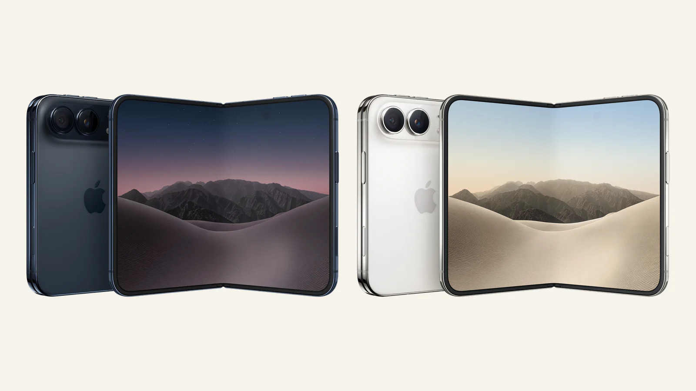
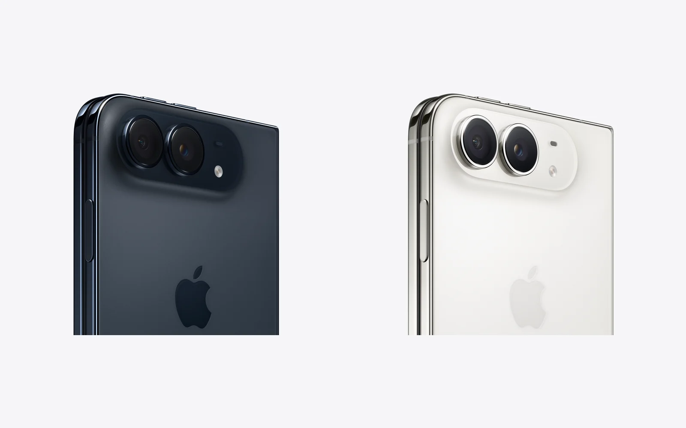

iPhone Duo. Apple-ի առաջին ծալովի հեռախոսն արդեն Հայաստանում է
5,4 դյույմ էկրանով iPhone, որը բացվում է 7,6 դյույմի։ Ինչ է անում լավ, ինչից է հրաժարվել և որքան արժե Երևանում։

Ինչ է սա
Ծալված վիճակում սա կոմպակտ 5,4 դյույմանոց հեռախոս է։ Բացված վիճակում՝ 7,6 դյույմ էկրան, մոտ 50%-ով մեծ, քան iPhone 18 Pro Max-ինը։ Շրջանակն ու ծխնին տիտանից են, ունի IP68 պաշտպանություն փոշուց և ջրից, քաշը՝ 254 գ։ Ծալված վիճակում հաստությունը 11,3 մմ է, բացված վիճակում՝ 5,2 մմ։

Էկրաններ
Երկու էկրաններն էլ OLED են, ProMotion մինչև 120 Հց, Always-On և մինչև 3000 նիտ պայծառություն դրսում։ Ներքին էկրանն ունի հակափայլ ծածկույթ (nano-texture)։ iOS 27-ը մեծ էկրանին կողք կողքի ցույց է տալիս երկու հավելված, իսկ StandBy-ն աշխատում է ցանկացած էկրանին՝ առանց լիցքավորման։
Չիպ և մարտկոց
A20 Pro (2 նմ)՝ գոլորշային հովացման խցիկով, ինչպես iPhone 18 Pro-ում։ Մարտկոցները երկուսն են՝ յուրաքանչյուր կեսում մեկը։ Apple-ը խոստանում է մինչև 24 ժամ սովորական օգտագործում, մինչև 44 ժամ տեսանյութ արտաքին էկրանին և մինչև 31 ժամ՝ ներքինին։ 60 Վտ USB-C լիցքավորիչով 50%-ը լիցքավորվում է մոտ 20 րոպեում, MagSafe-ով՝ մինչև 25 Վտ։
Տեսախցիկներ
- 48 ՄՊ հիմնական տեսախցիկ՝ 2× մոտեցումով, և 48 ՄՊ գերլայնանկյուն, որը նկարում է նաև մակրո։
- Արտաքինում՝ 12 ՄՊ Center Stage տեսախցիկ, ներսում՝ էկրանի տակ թաքնված տեսախցիկ տեսազանգերի համար։
- Հիմնական տեսախցիկները կարելի է օգտագործել սելֆիի համար. ծալեք հեռախոսը և նայեք արտաքին էկրանին։
Ինչից է հրաժարվել
- Face ID չկա։ Touch ID-ն կողային կոճակում է։
- Միայն eSIM, SIM քարտի բնիկ չկա։ Գնելուց առաջ ճշտեք օպերատորից, թե ինչպես ստանալ eSIM։
- Չկա 4× հեռադիտակային տեսախցիկ, ինչպես iPhone 18 Pro-ում, միայն 2× մոտեցում։
Գինը Հայաստանում
ԱՄՆ-ում գինը սկսվում է $1999-ից (256 ԳԲ) և հասնում է $3199-ի (2 ՏԲ)։ Երևանում 2026 թ. հոկտեմբերի 18-ին REDstore-ում 256 ԳԲ տարբերակն արժե 1 399 000 ֏, 512 ԳԲ-ը՝ 1 499 000 ֏, երկու գույներն էլ առկա են։ 1 ՏԲ և 2 ՏԲ տարբերակներ խանութներում դեռ չկան։ Գները փոխվում են ամեն օր, իսկ ապրանքի էջում միշտ թարմ գներն են։
Ում համար է
Նրանց համար, ովքեր հեռախոսով կարդում, դիտում և աշխատում են՝ փաստաթղթեր, երկու հավելված միաժամանակ, տեսանյութ գրեթե պլանշետի չափ էկրանին, որը, միևնույն է, տեղավորվում է գրպանում։ Եթե ամենակարևորը տեսախցիկն է կամ գինը, ավելի լավ ընտրություն է iPhone 18 Pro Max-ը՝ Հայաստանում 630 000 ֏-ից։
Աղբյուրներ՝ Apple Newsroom: Apple unveils iPhone Duo · Apple Newsroom: Open up to new possibilities with iPhone Duo · Macworld: iPhone Duo design, price, specs and release date · Engadget: Apple announces the iPhone Duo
18.10.2026